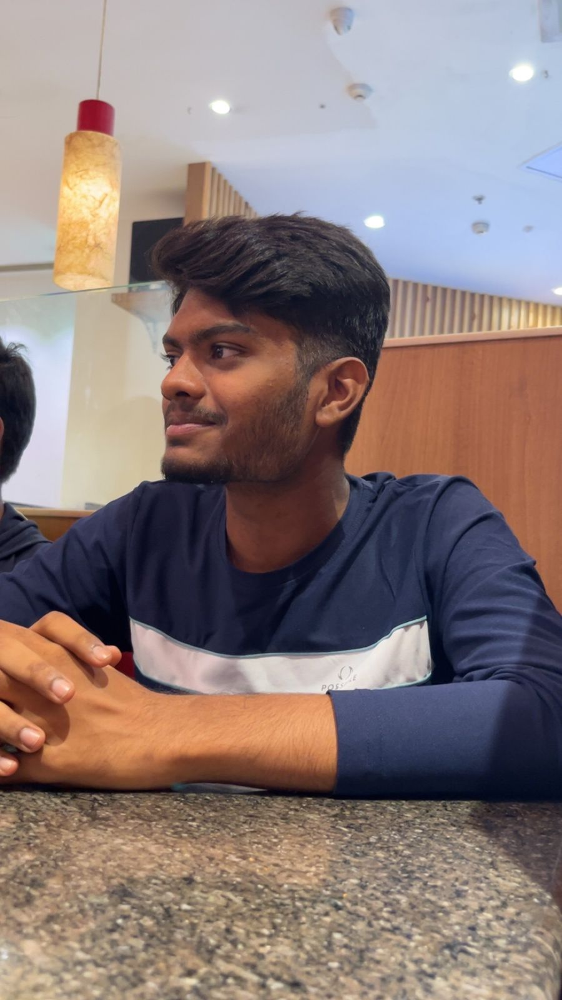

⌘
Programming
C · Python · Java
LANGUAGESCOMPUTER SCIENCE & ENGINEERING · CHENNAI
I'm Mohamed Asif — a CSE student who enjoys solving problems, exploring technology and creating useful software experiences.

WHO I AM
I'm a Computer Science and Engineering student at Sri Sairam Institute of Technology, Chennai. I enjoy working across programming, problem-solving and software development — from Python applications to web-based platforms.
My goal is to turn what I learn into practical, thoughtful solutions and grow as a software developer through hands-on projects and collaboration.
A growing toolkit built through coursework, internships and hands-on project work.
C · Python · Java
LANGUAGESHTML5 · CSS3 · JavaScript
FRONT ENDMySQL
DATAGit · GitHub · VS Code
DSA · OOP · REST APIs
A selection of academic and practical projects from my development journey.
An RFID-based livestock tracking and drug monitoring system combining connected sensing with edge AI.
Built livestock tracking and drug monitoring capabilities, with an edge AI pipeline for disease detection and animal health classification.
A web and mobile application designed to help students explore personalised career paths and industry insights.
Focused on making career exploration and guidance more accessible to students.
A full-stack application for managing student records, attendance and academic performance with a MySQL backend.
Brings key academic administration data into one organised system.
A Python OCR tool to extract text from PDFs and images, alongside a real-time weather app using REST API integration.
Explored document text extraction and consuming live data from an external API.
Education, internships and certifications that continue to shape my foundation.
Sri Sairam Institute of Technology · Chennai
CGPA: 8.75 / 10.0CodSoft · Online
Completed a 30-day internship, delivering domain-specific tasks and project work.Sairam Incubation Center
Hands-on training in file handling, OOP and project development; delivered a functional project.I'm open to connecting, learning from others and exploring opportunities to build useful technology together.
Say hello ↗